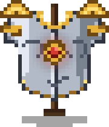

From first iron to relics no forge remembers making.

Alt+E opens your Curios slots: rings, amulets, capes, belts, charms.
Artifacts (winged boots, gloves, horns…) equip there and change your playstyle. Look for them in dungeons.
Beyond netherite, two Cataclysm tiers:
Ignitium (Ignis loot) — the best fire armor.
Witherite (Harbinger loot) — a notch above netherite.